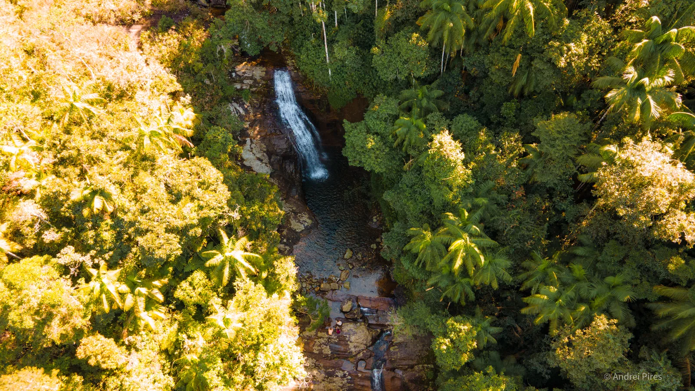
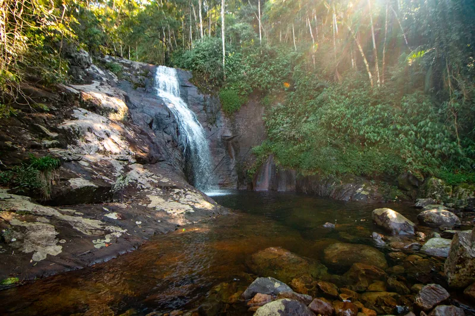
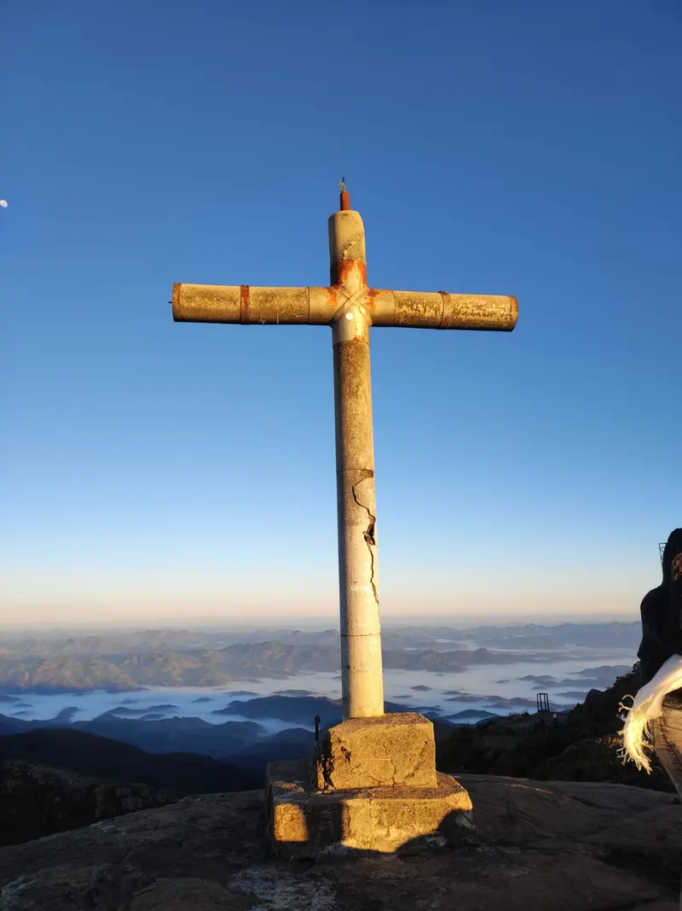
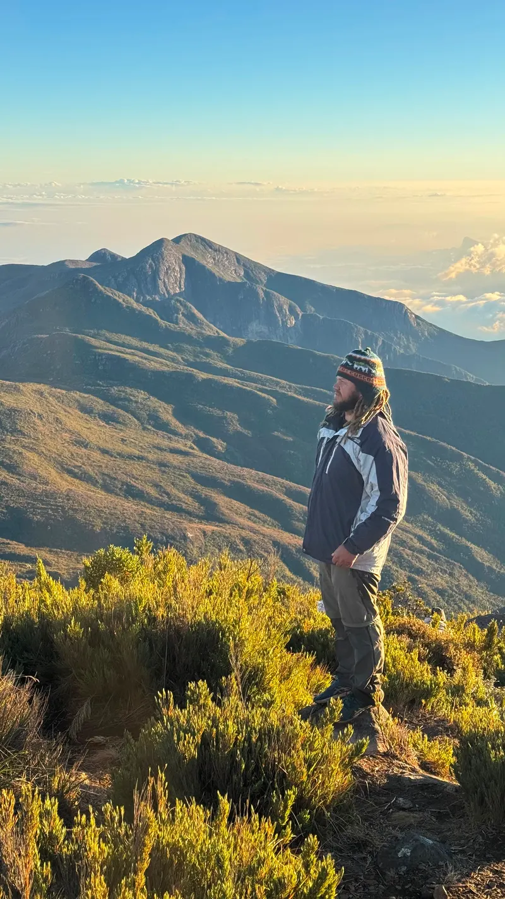
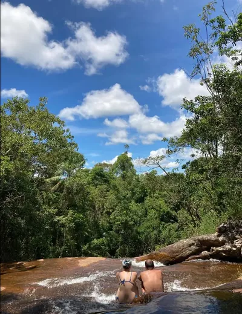
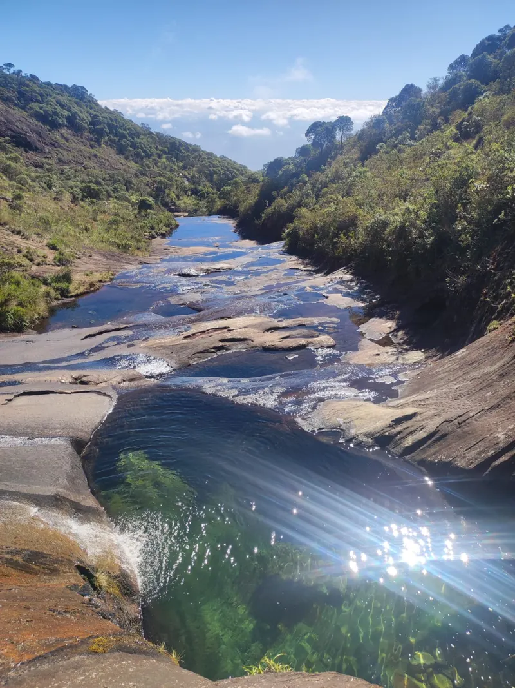
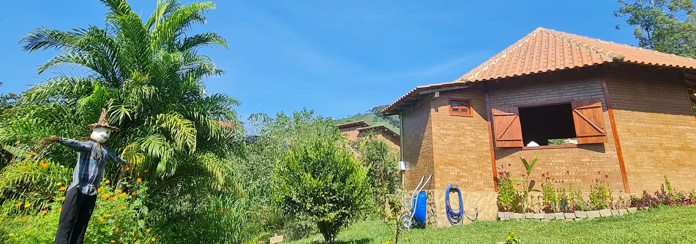

Patrimônio da Penha · Caparaó · ES
O que fazer no Caparaó
Cachoeiras de água gelada, a subida ao Pico da Bandeira, guia turístico local e o clima de vila tranquila cercada por Mata Atlântica — tudo saindo da porta da Casa do Chapéu.
Roteiro
Patrimônio da Penha rende dias inteiros
Vila pequena, mas com bastante coisa boa por perto — dá pra montar o roteiro conforme o tempo que você tem.

Cachoeiras perto da hospedagem
A trilha de nove pontos que começa a poucos passos da Casa do Chapéu, mais opções para quem quer esticar o passeio.

Trilha do Pico da Bandeira
Dificuldade, tempo de subida, rotas e como agendar no ICMBio.

Guia turístico local
Fale com o Patrick da Bicho Grilo Expedições para trilhas guiadas e a subida ao Pico da Bandeira com segurança.

Onde comer
Os restaurantes já testados e recomendados pertinho da hospedagem.
Cultura local
A feira de sábado
Aos sábados, a praça da vila vira feira: pastel de carne de jaca e de taioba, hortifrúti fresco e produtos artesanais direto do produtor. Um bom motivo para encaixar uma manhã de sábado no seu roteiro.

Antes de vir
Informações práticas

Use a Casa do Chapéu como base para explorar o Caparaó
Consulte a disponibilidade das Cabanas Lua e Estrela e reserve em minutos, direto com a gente.